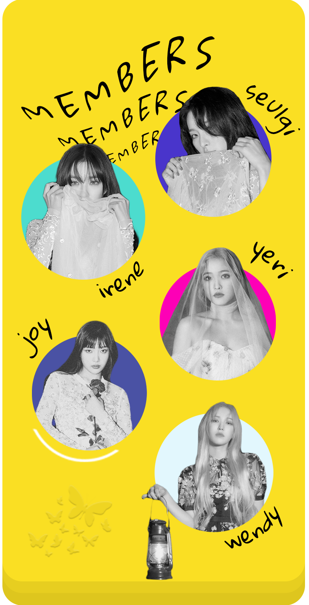
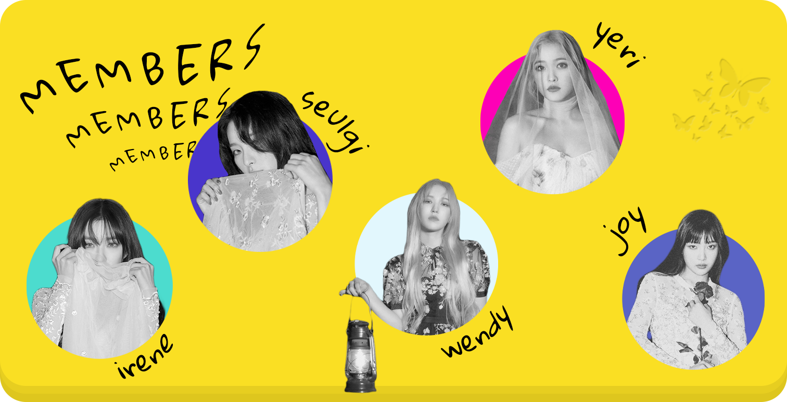

วิเคราะห์ MV ' PSYCHO ' เพลงจากวงเกิร์ลกรุ๊ป RED VELVET ที่กำลังพุ่งสูงถึงหนึ่งร้อยกว่าล้านวิว !
" you got me feeling like a PSYCHO"
เชื่อว่าทุกท่านจะต้องเคยได้ยินหรือพบเห็นประโยคนี้อยู่บ่อยๆ ซึ่งประโยคนี้มาจากเพลง PSYCHO ของวง RED VELVET วงเกิร์ลกรุ๊ปเกาหลีจากบริษัทยักษ์ใหญ่ทรงอิทธิพลอย่าง SM Entertainment ที่นอกจากจะมีท่วงทำนองที่ติดหูแล้ว ในเอ็มวีก็ยังมีความน่าสนใจไม่แพ้กันอีกด้วย เอาล่ะค่ะ
มาวิเคราะห์ไปพร้อมๆกันเลยดีกว่า!


จะเห็นได้ชัดว่าตัวละครหลักคือไอรีน และอีกสี่คนคือจิตใจข้างในของไอรีนนั่นเอง มีการใช้สีเสื้อผ้าของแต่ละคนแบบโทนขาวดำสลับกันไปทั้งเพลง มีการอ้างอิงจากภาพยนตร์เรื่อง Black Swan ที่นางเอกเเสดงเป็นหงส์ขาว หงส์ดำ ซึ่งสื่อถึงจิตใจของมนุษย์ที่มีทั้งด้านดีและด้านไม่ดี